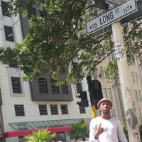

Historic places in Cape Town
Iziko Lodge

The Slave Lodge was built in 1679 as the slave lodge of the Dutch East India Company. It is believed that up to 9000 slaves, convicts and the mentally ill lived in the building between 1679 and 1811. The Iziko website The Heritage of Slavery in South Africa gives details of the slave period in the history of the building. In 1810 the building was modified to serve as government offices. Various governmental offices were housed in the building during the nineteenth and early twentieth centuries, for example, the Governor’s Advisory Council, the upper house of the first parliament, The Cape Supreme Court, the first library, the first post office, Deeds Office, and the Women’s Auxiliary Services of the South African Defence Force.
The building was restored in 1960 for use as a cultural history museum. The Slave Lodge, then known as the SA Cultural History Museum, opened its door as a museum on 6 April 1966. The SA Cultural History Museum, originally a division of the SA Museum, became an autonomous museum in 1969. In 1998 the building was renamed the Slave Lodge. In 2000, the museum and its associated sites amalgamated with its parent body as well as the SA National Gallery, the William Fehr Collection and the Michaelis Collection to form Iziko Museums of Cape Town.
Long Street
Long Street is a major street located in the City Bowl section of Cape Town, South Africa. It is famous as a bohemian hang out and the street is lined with many book stores, various ethnic restaurants and bars.
Restaurants include African restaurants such as Zula, and Indian restaurants such as Masala Dosa. Long Street exhibits a diversified culture and attracts tourists from all over the world. It also has a number of youth hostels which provide accommodation to an international roster of guests. Several theatres which showed anti-apartheid plays were located on the street during the 1970s and 1980s, although most have now closed and been replaced by restaurants or stores.
Castle of Goodhope

Built by the Dutch East India Company between 1666 and 1679, the Castle is the oldest existing colonial building in South Africa. It replaced an older fort called the Fort de Goede Hoop which was constructed from clay and timber and built by Jan van Riebeeck upon his arrival at the Cape of Good Hope in 1652.
Two redoubts, Redoubt Kyckuit (Lookout) and Redoubt Duijnhoop (Duneheap) were built at the mouth of the Salt River in 1654. The purpose of the Dutch settlement in the Cape was to act as a replenishment station for ships passing the treacherous coast around the Cape on long voyages between the Netherlands and the Dutch East Indies (now Indonesia).